1 / 24
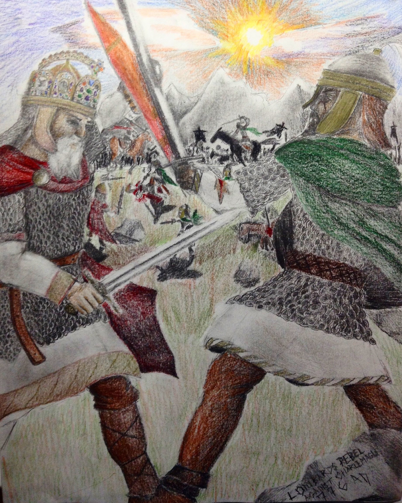
A picture from my Concentration Portfolio of Charlemangne fighting the Lombards in Italy
2 / 24
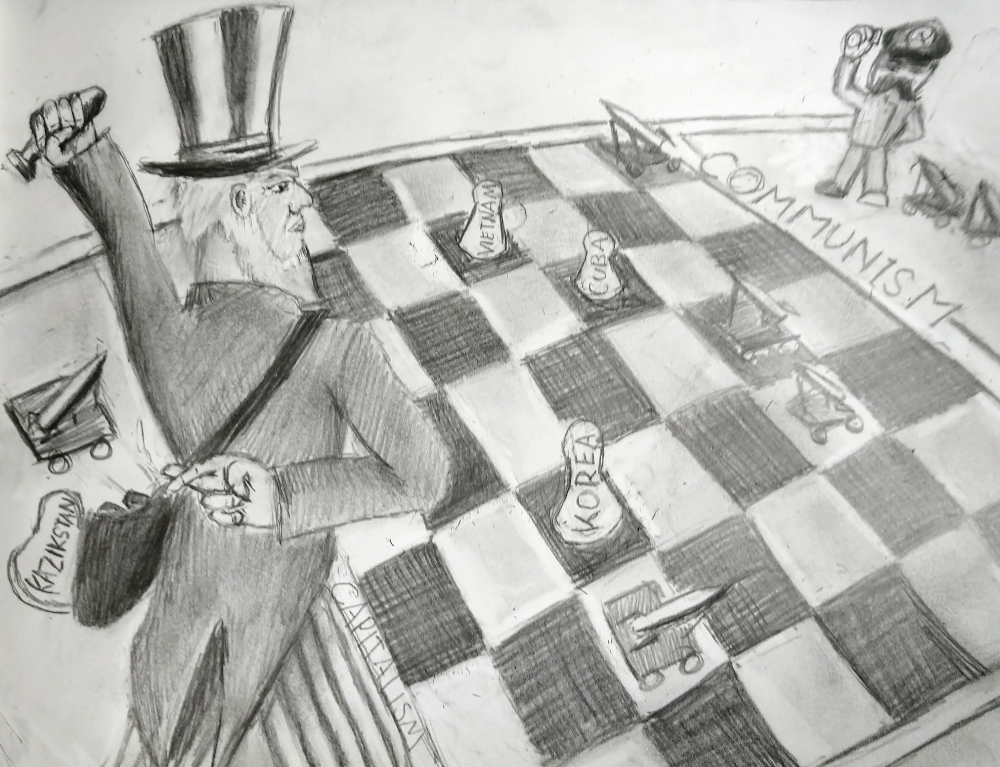
A picture from my concentration portfolio of Stalin and Uncle Sam (America) playing chess using other countries as pawns
3 / 24
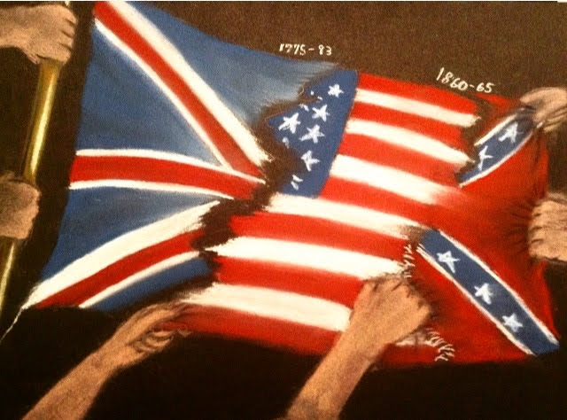
A picture from my concentration portfolio that shows revolution symbolically in american History
4 / 24
A picture from my breadth portfolio of a seascape and a nautically inspired compass
5 / 24
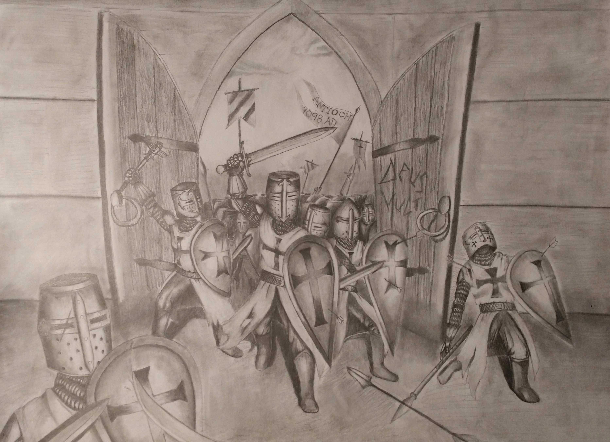
A picture from my concentration portfolio depicting a Crusader invasion
6 / 24
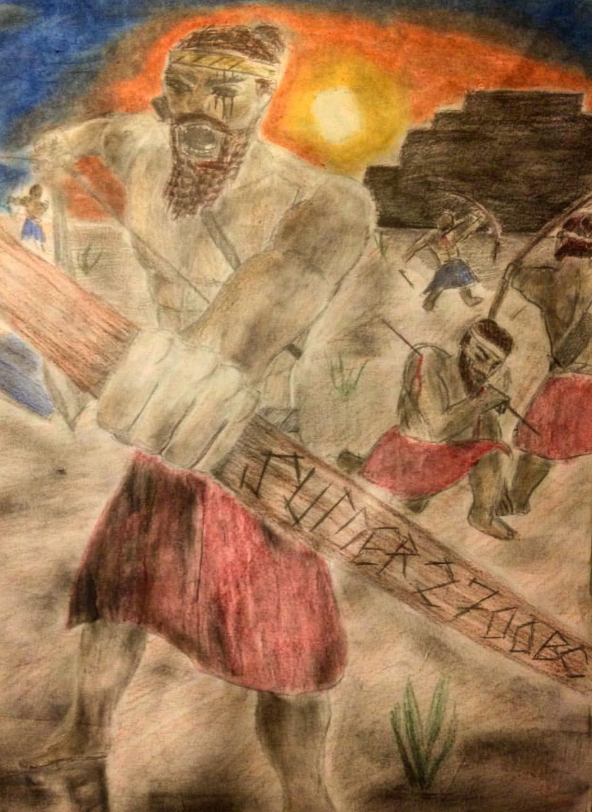
A picture from my concentration portfolio showing the first recorded war in ancient Sumer
7 / 24
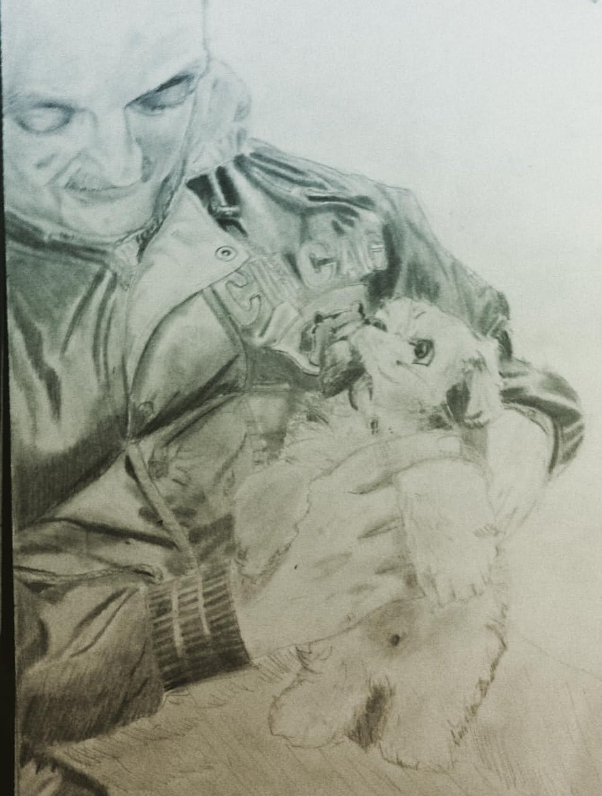
A picture from my Breadth portfolio of a man holding a newly adopted dog
8 / 24
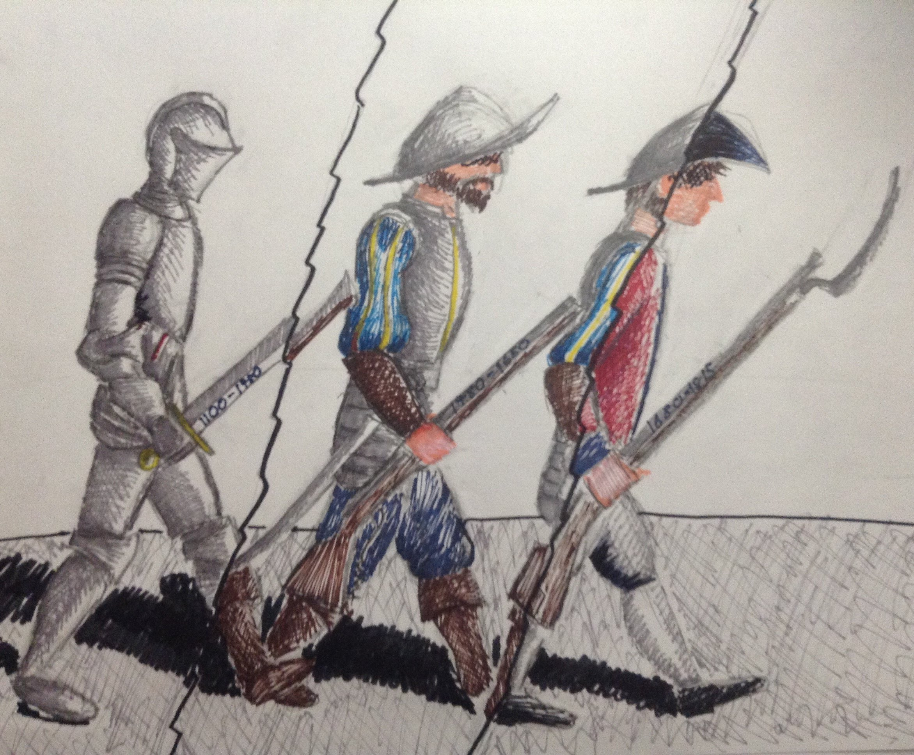
A picture from my concentration portfolio depicting the rapid change in gear over 2 centuries
9 / 24
A picture from my breadth portfolio of a gladiator partially inspired by "For Honor" and partially by history
10 / 24
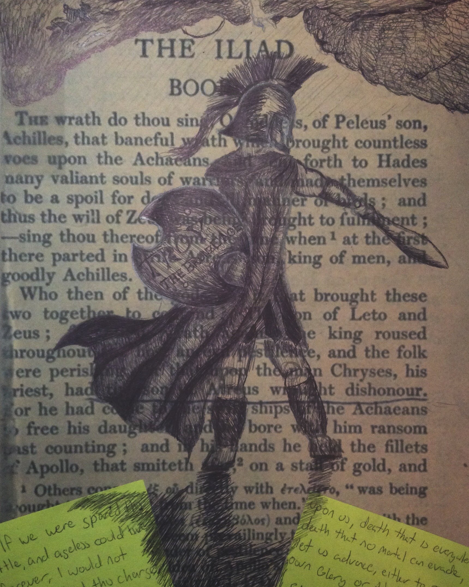
A picture from my concentration portfolio of a greek soldier standing on the first page of Homer's Iliad
11 / 24
A picture from my concentration portfolio of a swiss guard mourning a civilian's death during an invasion of Italy
12 / 24
A picture from my breadth portfolio meant to depict the color "red" without using it in the picture
13 / 24
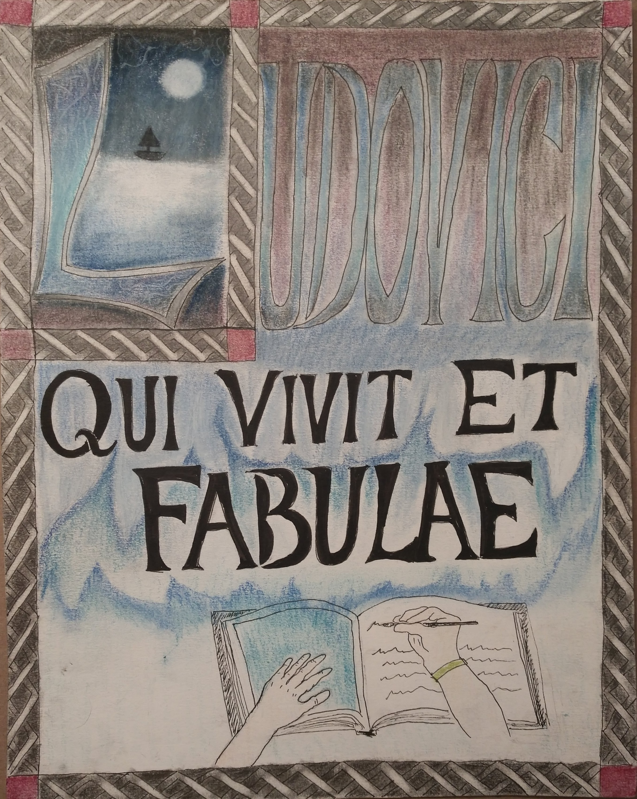
A picture from my breadth portfolio of an illuminated Manuscript about myself
14 / 24
A picture from my breadth portfolio of a Bob Ross style landscape with mountains
15 / 24
A picture from my breadth portfolio of a drawn Phoenix rising from the paper
16 / 24

A picture from my breadth portfolio- a portrait of a girl
17 / 24
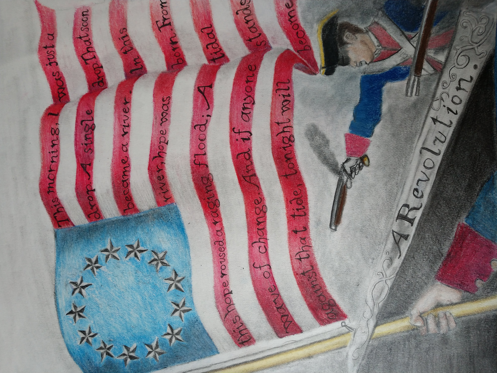
A picture from my concentration portfolio depicting the effect of the American Revolution
19 / 24
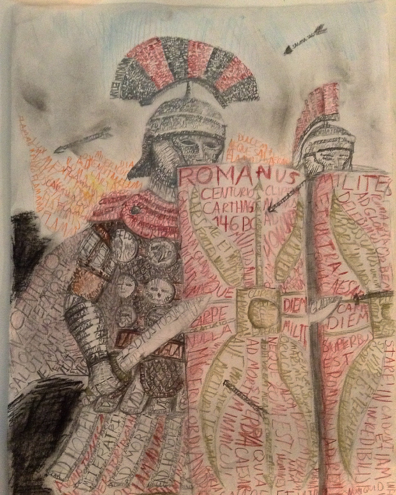
A picture from my concentration portfolio of marching romans during the invasion of Carthage using only words to draw
20 / 24
A picture from my breadth portfolio of a rose
21 / 24
A picture from my concentration portfolio of the new era of warfare (The war on terror) brought about by the 9/11 terror attacks on America
22 / 24
A picture from my breadth portfolio of a samurai
23 / 24
A picture from my breadth portfolio- a self portrait
24 / 24
A picture from my breadth portfolio- a picture of a girl looking up at the stars
24 / 24
A picture from my concentration portfolio of a soldier doing the "I Want You" draft poster pose.